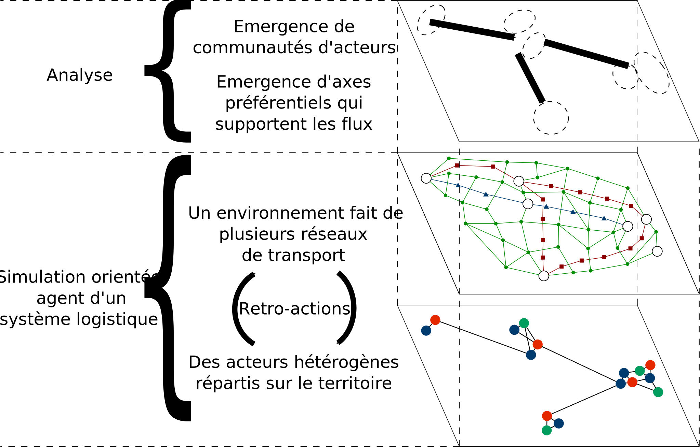
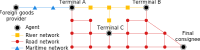
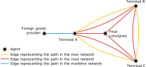

Thibaut Démare - LITIS
thibaut.demare@univ-lehavre.fr
thibaut.demare@univ-lehavre.fr
Modélisation d'un système logistique par des agents et des graphes dynamiques
Séminaire LITIS - Bits en Somme
Parc du Marquenterre
26-28 Septembre 2019
Parc du Marquenterre
26-28 Septembre 2019
Modélisation d'un système logistique par des agents et des graphes dynamiques
Thibaut Démare
Stefan Balev, Cyrille Bertelle, Antoine Dutot, Dominique Fournier and Eric Sanlaville
Université Le Havre Normandie - LITIS
Séminaire LITIS - Bits en Somme
26-28 Septembre 2019
Plan
- Objectif et problématiques du projet
- Modélisation
- Implémentation
- Résultats
- Travaux en cours et perspectives
Objectif et problématiques du projet
Objectif
On cherche à modéliser et simuler un système logistique pour en comprendre son organisation et son évolution.
Que considère-t-on comme un système logistique?
- C'est une composante essentielle d'un territoire dans lequel les acteurs s'organisent autour d'infrastructures pour faire circuler des flux de marchandises, d'informations et financiers.
- Ces systèmes possèdent des nœuds d'accès par lesquels la marchandise entre ou sort.
- Des métropoles, ou aires urbaines, attirent et génèrent les flux de marchandises.
- Le système subit plusieurs contraintes de nature différente (spatiale, économique, politique, ou écologique).
- L'organisation logistique conduit les flux de marchandises à emprunter des axes préférentiels.
Problématique
- On cherche à comprendre, à de multiples échelles, comment des acteurs, autonomes et très hétérogènes, s'organisent collectivement autour des infrastructures à leurs dispositions pour gérer des flux de marchandises soumis à un ensemble de contraintes.
- Nous proposons un modèle agent qui représente les propriétés, contraintes et comportements locaux d'un système logistique pour en reproduire le fonctionnement global grâce à la simulation.
- La simulation permet alors de tester différents scénarios pour comprendre comment des décisions locales impactent l'ensemble du système.
Approche
- On veut avoir la capacité d'observer comment les propriétés macroscopiques du système émergent des propriétés et comportements locaux (ex: apparition d'axes préférentiels).
- Les modèles multi-agents sont adaptés : ils permettent de modéliser chaque acteur et infrastructure par des agents définis individuellement et localement par leurs propres propriétés et comportements.
- Il s'agit d'une approche dite "système complexe".
Approche
- Les flux de marchandises sont créés par les décisions des acteurs. Ils ne proviennent pas d'une base de données pré-établie.
- Ce sont les comportements internes et autonomes des agents qui sont à l'origine de l'organisation logistique.
- Le système évolue dans le temps (création et disparition d'agents, dynamisme du réseau de transport).
- Les agents s'adaptent en temps réel à ces évolutions.
Modélisation
Une approche système complexe de la modélisation
- Un modèle multi-agent qui représente chaque acteur et infrastructure par une entité autonome et réactive.
- Ces agents ont des règles prédéfinies qui décrivent comment ils se comportent et interagissent entre eux en fonction de leurs perceptions de leur environnement et de leurs besoins.
- Un graphe dynamique mutli-modal représente le réseau de transport.
- On peut suivre le déplacement de chaque véhicule et observer l'évolution globale du trafic.
- Et on peut modifier le graphe en temps réel.
Architecture générale

Figure 3 : Représentation générale du modèle
Figure 3 : Représentation générale du modèle
Les agents intervenant dans l'organisation logistique
Figure 4 : Une partie des agents implémentés.
Le transport multi-modal et ses contraintes
- Lors d'un transport multi-modal, la marchandise doit passer par des nœuds intermédiaires du réseau pour changer de véhicules : il s'agit des terminaux.
- Cela implique des coûts supplémentaires (financiers ou temps).
- Les véhicules doivent avoir des capacités en fonction du réseau sur lequel ils se déplacent.
- Les infrastructures ont des capacités limités pour faire rentrer (ou sortir) des véhicules par unité de temps et par mode.
Un réseau de transport multi-modal

Figure 5 : un réseau multi-modal
Figure 5 : un réseau multi-modal
Un réseau de transport multi-modal

Figure 5 : Et comment on le modélise
Figure 5 : Et comment on le modélise
Les agents intervenant dans le transport de la marchandise
Figure 6 : Les agents impliqués dans le multi-modal et leurs interactions.
Implémentation
La plateforme de simulation
- Le modèle a été implémenté dans une plateforme de simulation orientée agent et appelée GAMA.
- L'implémentation simule l'évolution du système heure par heure grâce à des agents réactifs.
- On utilise des données réelles qui concernent l'axe Seine (environ 12 000 agents) afin d'effectuer des analyses et de permettre de confronter le modèle à des données réelles.
Stratégies et dynamisme d'interactions
- Quatre stratégies possibles pour concevoir un réseau d'approvisionnement.
- Un seuil de réapprovisionnement comme stratégie de contrôle des stocks.
- Une compétition entre les prestataires logistiques.
Paramétrage de la simulation
- Les données en entrée : le réseau de transport, la localisation et les propriétés de chaque agent,...
- La population locale (qui détermine le volume de la consommation).
- Les agents prennent des décisions qui s'appuient sur différentes stratégies.
- La mise en place de perturbations du système.
- ...
Résultats
Quelques uns des résultats obtenus
- Impacts d'une perturbation sur le réseau de transport.
- Émergence des meilleures stratégies de sélection des entrepôts à partir de décisions locales.
- Étude de la compétition entre les ports d'Anvers et du Havre.
- Étude des parts modales entre le routier et le fluvial (notamment avec l'ouverture du CSN).
- ...
Évolution du trafic de marchandise sur le réseau de transport multimodal
Travaux en cours et perspectives
Travaux en cours
- On travaille actuellement sur l'analyse des données issues des simulations afin d'extraire de nouvelles informations (techniques de fouilles de données/data science).
- Ensuite, on prépare le terrain pour le prochain post-doc avec une extension du modèle permettant le cabotage entre les ports normands.
Perspectives
- Travaux du futur post-doc sur les port normands.
- Suite de l'analyse des données ?
Merci pour votre attention
thibaut.demare@univ-lehavre.fr